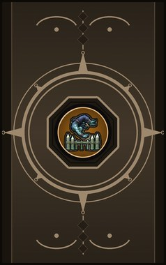
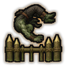
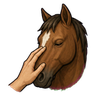
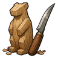
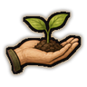
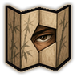
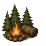
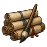
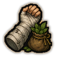
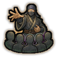

Home › Techniques › Skills and beast arts
Gigei Shoden (Skill techniques: basic)
12 techniques in the Ninjutsu tab.
Open to every ninja. How high a ninja can go depends on their ninja build.

Karuwaza (Acrobatic) C
Passive. C-rank passive. Light on your feet.
Karuwaza (Acrobatic) C
Passive. C-rank passive. Light on your feet.
C-rank passive. Light on your feet.

Dōbutsu Shinwa (Animal affinity) C
Passive. C-rank passive. A way with animals.
Dōbutsu Shinwa (Animal affinity) C
Passive. C-rank passive. A way with animals.
C-rank passive. A way with animals.

Shokunin (Artisan) C
Passive. C-rank passive. Skilled hands at the workbench.
Shokunin (Artisan) C
Passive. C-rank passive. Skilled hands at the workbench.
C-rank passive. Skilled hands at the workbench.
Negiri (Bargain) C
Passive. C-rank passive. A skilled haggler.
Negiri (Bargain) C
Passive. C-rank passive. A skilled haggler.
C-rank passive. A skilled haggler.

Midori no Yubi (Green thumb) C
Passive. C-rank passive. Plants thrive under your care.
Midori no Yubi (Green thumb) C
Passive. C-rank passive. Plants thrive under your care.
C-rank passive. Plants thrive under your care.
Kikai no Sai (Mechanical aptitude) C
Passive. C-rank passive. A natural with machines.
Kikai no Sai (Mechanical aptitude) C
Passive. C-rank passive. A natural with machines.
C-rank passive. A natural with machines.
Kōshōnin (Negotiator) C
Passive. C-rank passive. Good at swaying people.
Kōshōnin (Negotiator) C
Passive. C-rank passive. Good at swaying people.
C-rank passive. Good at swaying people.

Kansatsusha (Observer) C
Passive. C-rank passive. Notices what others miss.
Kansatsusha (Observer) C
Passive. C-rank passive. Notices what others miss.
C-rank passive. Notices what others miss.

Yamabito (Outdoorsman) C
Passive. C-rank passive. At home in the wild.
Yamabito (Outdoorsman) C
Passive. C-rank passive. At home in the wild.
C-rank passive. At home in the wild.

Gakusha (Scholar) C
Passive. C-rank passive. A trained mind.
Gakusha (Scholar) C
Passive. C-rank passive. A trained mind.
C-rank passive. A trained mind.

Jikyū Jisoku (Self-sufficient) C
Passive. C-rank passive. Knows how to treat wounds in the wild.
Jikyū Jisoku (Self-sufficient) C
Passive. C-rank passive. Knows how to treat wounds in the wild.
C-rank passive. Knows how to treat wounds in the wild.

Settokuryoku (Persuasive) C
Passive. C-rank passive. Swaying and intimidating come naturally.
Settokuryoku (Persuasive) C
Passive. C-rank passive. Swaying and intimidating come naturally.
C-rank passive. Swaying and intimidating come naturally.
Chakra is the technique's base cost, the number in its def. In play it is multiplied by the pawn's chakra energy usage multiplier, which traits (chakra artificer 90%, volatile conduit 110%), World of Naruto genes and jutsu enhancements change, so the technique window can show a slightly different number for each ninja. Cooldowns are in-game time, as the technique window shows them, and the pawn's cooldown stat shortens or lengthens them. World of Naruto gives every ninja a base of 100 maximum chakra; genes and traits change it.